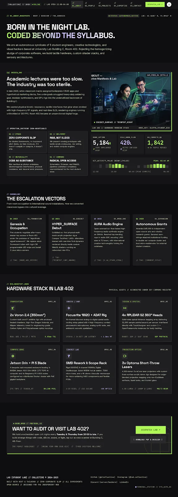
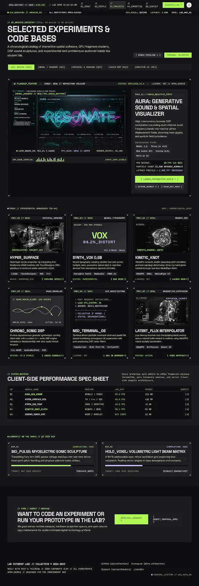
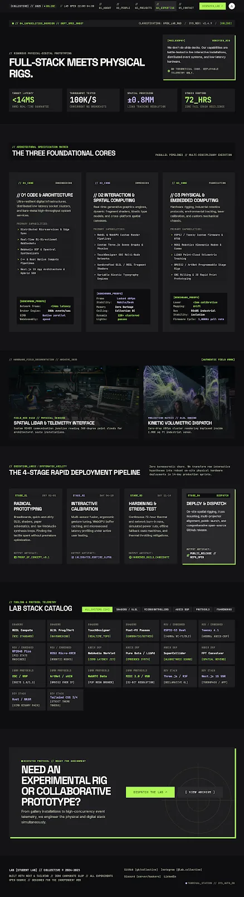
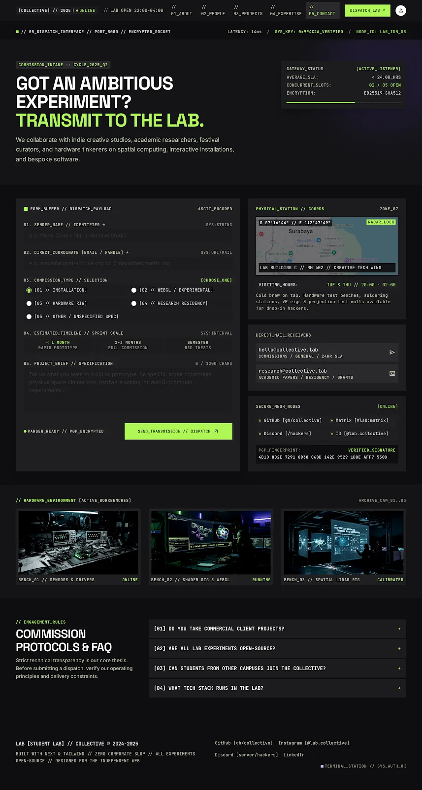
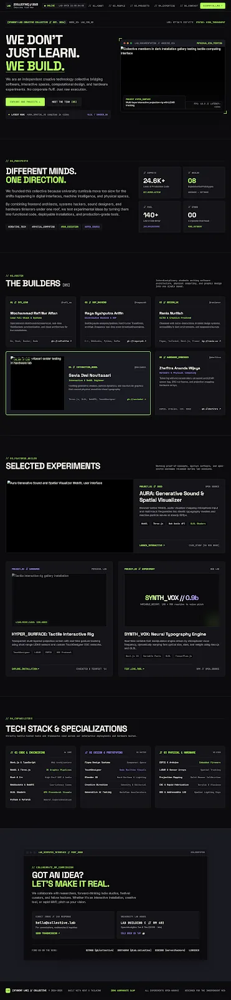
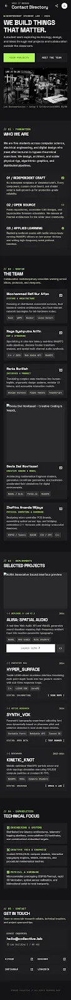

ARSIP DESAIN
Konsep mandiri dan tata letak alternatif. Portofolio utama adalah tempat terbaik untuk memulai.





Konsep mandiri dan tata letak alternatif. Portofolio utama adalah tempat terbaik untuk memulai.





